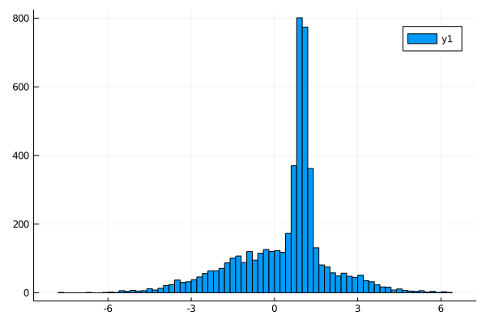

A gaussian mixture model
First of all we define our model,
using KissABC
using Distributions
function model(P, N)
μ_1, μ_2, σ_1, σ_2, prob = P
d1 = randn(N) .* σ_1 .+ μ_1
d2 = randn(N) .* σ_2 .+ μ_2
ps = rand(N) .< prob
R = zeros(N)
R[ps] .= d1[ps]
R[.!ps] .= d2[.!ps]
R
endmodel (generic function with 1 method)Let's use the model to generate some data, this data will constitute our dataset
parameters = (1.0, 0.0, 0.2, 2.0, 0.4)
data = model(parameters, 5000)5000-element Array{Float64,1}:
-2.0607560420115547
-4.8027286218505845
-0.954363648448144
0.9959807658961728
-1.2899876452088466
0.81976638373096
1.2308627303393742
-0.9617876174616281
1.2781240641620057
1.363183496410515
⋮
1.1268385130834253
-2.008432494818724
-0.07671464194805482
0.5933341763238574
-0.8445460210543754
-0.17427502358619393
1.236847664875569
1.33070675416992
4.180520633679337let's look at the data
using Plots
histogram(data)
savefig("ex1_hist1.svg");
we can now try to infer all parameters using KissABC, first of all we need to define a reasonable prior for our model
prior = Factored(
Uniform(0, 2), # there is surely a peak between 0 and 2
Uniform(-1, 1), #there is a smeared distribution centered around 0
Uniform(0, 1), # the peak has surely a width below 1
Uniform(0, 4), # the smeared distribution surely has a width less than 4
Beta(2, 2), # the number of total events from both distributions look about the same, so we will favor 0.5 just a bit
);let's look at a sample from the prior, to see that it works
rand(prior)(1.7888015108376032, -0.105105932244693, 0.7128554779633851, 0.9956792074989771, 0.6715178400122535)now we need a function to compute summary statistics for our data, this is not the optimal choice, but it will work out anyway
function S(x)
r = (0.1, 0.2, 0.5, 0.8, 0.9)
quantile(x, r)
endS (generic function with 1 method)we will define a function to use the model and summarize it's results
summ_model(P, N) = S(model(P, N));now we need a distance function to compare the summary statistics of target data and simulated data
summ_data = S(data)
D(P, N = 5000) = sqrt(mean(abs2, summ_data .- summ_model(P, N)));we can now run ABCDE to get the posterior distribution of our parameters given the dataset data
approx_density = ApproxPosterior(prior, D, 0.05)
res, _ = mcmc(approx_density, nparticles = 100, generations = 500, verbose = 0)([(0.9676218802078241, 0.012118788674481823, 0.13478886006070112, 2.010745199702375, 0.3955593454390381), (1.029337309152301, -0.021568061382700024, 0.16744458841593426, 2.1570818952593473, 0.4416919062515499), (1.2629078320177907, 0.014306914300307713, 0.07907268276125877, 1.8203210402380745, 0.27302472748847145), (1.075784485334989, 0.050370963574978916, 0.16501231960324833, 1.8379769559214432, 0.32961698999234096), (1.1608164440160529, -0.6897661858781556, 0.5107614355294952, 1.6921777873805999, 0.5602560796433295), (0.9685953830997873, 0.03627140035833681, 0.2672800812551135, 1.9106257532784363, 0.36561691107254973), (0.9398303710232659, -0.08514305101897052, 0.22858251159564225, 2.0529415551959547, 0.42035612073716544), (1.0068740991786573, -0.035657125770911825, 0.30732084679562416, 2.191037493690283, 0.43975970962054045), (0.9861930866537688, 0.06298567231235053, 0.257522046502572, 2.125150115598826, 0.404308183229635), (1.1606574401917613, -0.6926260469253699, 0.5486418791536851, 1.670368058366686, 0.5714739825875155) … (1.0413638692613452, 0.04864653555755766, 0.2150055775168167, 1.8231591607155462, 0.3217132373234373), (0.948919230066441, 0.025035228625751544, 0.24962298085314016, 2.0612703390700946, 0.39342272237353265), (1.0165867524530225, -0.0020886128247358327, 0.12089769739767148, 1.962499956475043, 0.3839061515974491), (1.0600155530439663, -0.40023611892075267, 0.5317782286283517, 1.8830280898500427, 0.49547685819039283), (1.0334052783077545, 0.02844648239721619, 0.2125503104337633, 2.0874766996680365, 0.4246707495166455), (1.0365421693317136, 0.0262318696385671, 0.23887659228010222, 2.169319616243678, 0.4449554758842389), (0.9460758628422479, -0.02521214021695533, 0.18611521103120932, 2.006804643859839, 0.3844372950765838), (0.13947601583656657, 0.6712556513968466, 0.9815322959877288, 2.18863586854347, 0.6637295154691722), (1.0133616459749881, 0.0051453136712602925, 0.2183058551996212, 1.9662137367914083, 0.38467174017179495), (0.9429678849974216, -0.065073488316242, 0.2545214010903132, 2.045491098811791, 0.3886562832742084)], NamedTuple{(:logprior, :cost),Tuple{Float64,Float64}}[(logprior = -2.4117354908796433, cost = 0.0487726449648766), (logprior = -2.3808162672840334, cost = 0.04330936302480378), (logprior = -2.5978849791085112, cost = 0.08403663767950056), (logprior = -2.490559261182943, cost = 0.04611317695985449), (logprior = -2.3817532883967365, cost = 0.12839240268785895), (logprior = -2.4421007036293667, cost = 0.04770987891884238), (logprior = -2.392823638757671, cost = 0.027907933147712782), (logprior = -2.3817455660775586, cost = 0.07927875446002718), (logprior = -2.4044389466707385, cost = 0.0426198420791346), (logprior = -2.387769399948696, cost = 0.11988412910046696) … (logprior = -2.503109077219891, cost = 0.04862982092907681), (logprior = -2.4136230117577138, cost = 0.03943091763053361), (logprior = -2.42254238190762, cost = 0.04525499429634004), (logprior = -2.3672054527276227, cost = 0.11250450414569003), (logprior = -2.3900831628564654, cost = 0.048885268211960924), (logprior = -2.3793172538475433, cost = 0.046638845761971436), (logprior = -2.4220223002207852, cost = 0.03451956068005073), (logprior = -2.480549251114531, cost = 0.36446801337111057), (logprior = -2.4217935820805225, cost = 0.032899821231785344), (logprior = -2.417985099674925, cost = 0.03664140645037185)])let's see the median and 95% confidence interval for the inferred parameters and let's compare them with the true values
getstats(V) =
(median = median(V), lowerbound = quantile(V, 0.025), upperbound = quantile(V, 0.975));
labels = (:μ_1, :μ_2, :σ_1, :σ_2, :prob)
P = [getindex.(res, i) for i = 1:5]
stats = getstats.(P)
for is in eachindex(stats)
println(labels[is], " ≡ ", parameters[is], " → ", stats[is])
endμ_1 ≡ 1.0 → (median = 0.9936683517016844, lowerbound = 0.921706580219455, upperbound = 1.1261624777121186)
μ_2 ≡ 0.0 → (median = 0.01216164208723013, lowerbound = -0.5522394040733892, upperbound = 0.133148552146341)
σ_1 ≡ 0.2 → (median = 0.21345103781931984, lowerbound = 0.12340596947076846, upperbound = 0.5406316451541516)
σ_2 ≡ 2.0 → (median = 1.9896795010055088, lowerbound = 1.7736739566708806, upperbound = 2.216829767365917)
prob ≡ 0.4 → (median = 0.3873922946726668, lowerbound = 0.29845083328103117, upperbound = 0.566145478689027)The inferred parameters are close to nominal values
This page was generated using Literate.jl.